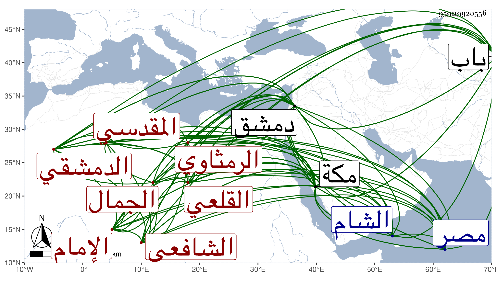

0902Sakhawi.DawLamic.ITO20230111-ara1.EIS1600.959119920556
Biography ID: 959119920556
64
عبد الله بن خليل بن فرج بن سعيد الإمام الجمال بن الزاهد المحب أبي الصفا المقدسي الرمثاوي ثم الدمشقي القلعي الشافعي . ولد بعد سنة ستين وسبعمائة تقريبا بقلعة دمشق ونشأ في كفالة أبيه وكان مجمعا على علمه وولايته مات سنة تسع وثمانين وسبعمائة فحفظ القرآن وشغله بالعلوم حتى شارك في العربية والفقه والحديث مشاركة جيدة ورسخ في علم الكلام مع حافظة قوية من الحديث وغيره واقتدار على العبارة الجيدة بحيث كان يعمل الميعاد بزاويته بالعقيبة الكبيرة من دمشق في يومين من الأسبوع فيجتمع عنده خلق كثيرون ، وصنف الكثير كمنار سبل الهدى وعقيدة أهل التقى في أصول الفقه وتحفة المتهجد وغنية المتعبد صنفه بمكة وقرئ عليه فيها بالمسجد الحرام أول ذي الحجة سنة إحدى عشرة وثمانمائة ورأيت في مشيخة التقى بن فهد أنه حدث في مكة بكتاب الذكر المطلق من تصانيفه وأنه سمعه منه وما أدري أهو المصنف قبله أم غيره ، وذكره شيخنا في إنبائه فقال إنه ولد في حدود الستين وقرأ على ابن الشريشي وابن الجابي وغيرهما ، ودخل مصر فحمل عن جماعة وجاور بمكة مدة طويلة ثم قدم الشام فأقام على طريقة حسنة وعمل المواعيد واشتهر وكان شديد الحط على الحنابلة وجرت له معهم وقائع . مات بدمشق في ربيع الآخر سنة ثلاث وثلاثين ، زاد غيره بكرة يوم الجمعة عاشره ودفن بباب الصغير وحضره خلق رحمه الله وإيانا . وممن أخذ عنه البقاعي ووصفه بالعالم الصوفي العارف القدوة العابد .
